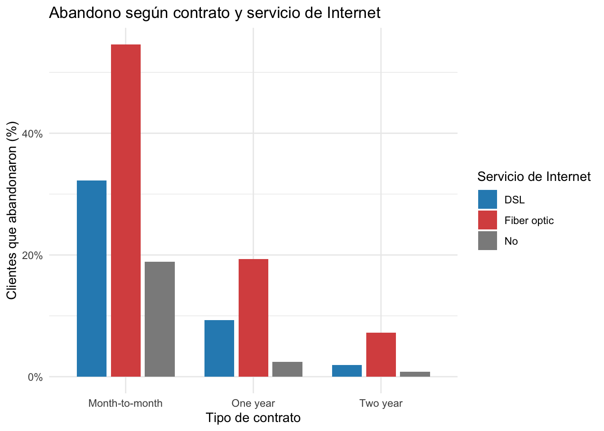

library(ggplot2)
library(dplyr)
library(tidyr)
library(scales)
library(knitr)
datos_telco <- read.csv(
"Telco_customer_churn.csv",
stringsAsFactors = FALSE,
na.strings = c("", "NA")
)
# Asegurar que los cargos totales se traten como valores numéricos
datos_telco$Total.Charges <- as.numeric(datos_telco$Total.Charges)Análisis Exploratorio de Datos: Abandono de Clientes (Telco Churn)
Inferencia Estadística - Grado en Ciencia e Ingeniería de Datos
Introducción
Este informe presenta un análisis exploratorio de los datos de clientes de una compañía de telecomunicaciones ficticia. El objetivo es describir la proporción de clientes que abandonaron la compañía y explorar qué características contractuales, económicas y relacionadas con los servicios están asociadas con el abandono (churn). Para ello se utilizan tablas de frecuencias, medidas descriptivas y representaciones gráficas. Los resultados se interpretan como asociaciones descriptivas, no como demostraciones de causalidad.
1. Descripción y procedencia de los datos
1.1. Origen, contexto y unidad de observación
El archivo utilizado es Telco_customer_churn.csv, correspondiente al conjunto de datos Telco Customer Churn descrito en la documentación pública de IBM Cognos Analytics. La documentación de IBM indica que el conjunto representa una compañía ficticia de telecomunicaciones que ofrece servicios de telefonía e Internet en California, y que la variable de abandono señala si el cliente dejó la compañía durante el último mes. El material se refiere a datos del tercer trimestre (Q3) del periodo descrito por IBM; esto no significa que la etiqueta Churn.Label mida necesariamente las bajas de todo un trimestre.
El conjunto contiene 7.043 observaciones y 33 variables. Cada fila representa un cliente, identificado mediante CustomerID. Las columnas describen la localización, el perfil demográfico, los servicios contratados, el contrato, la facturación y el estado o motivo del abandono.
La descripción oficial de IBM puede consultarse en: IBM Community, Telco customer churn (11.1.3+) y en la documentación de IBM Cognos Analytics.
Origen concreto de la descarga del archivo: debe añadirse la URL exacta del sitio desde el que el grupo obtuvo Telco_customer_churn.csv, si fue distinto de la referencia de IBM.
1.2. Diccionario de las variables utilizadas
A continuación se describen las principales variables del conjunto que se utilizan o se mencionan durante el análisis.
A. Identificación y ubicación
CustomerID: identificador de cada cliente.Count: campo de recuento que tiene el valor 1 para cada fila; no presenta variabilidad.Country,State,City,Zip.Code: país, estado, ciudad y código postal de residencia. En este conjunto,CountryyStateson constantes.Lat.Long: campo de texto que combina latitud y longitud.Latitude,Longitude: coordenadas geográficas numéricas.
B. Perfil demográfico
Gender: género registrado (Male,Female).Senior.Citizen: indica si el cliente está clasificado como persona mayor (Yes,No; la documentación de IBM lo define como 65 años o más).Partner: indica si el cliente tiene pareja.Dependents: indica si tiene personas dependientes a su cargo.
C. Relación y servicios contratados
Tenure.Months: antigüedad de la relación con la compañía, en meses.Phone.Service,Multiple.Lines: servicio telefónico y líneas múltiples.Internet.Service: servicio de Internet (DSL,Fiber opticoNo).Online.Security,Online.Backup,Device.Protection,Tech.Support,Streaming.TV,Streaming.Movies: indicadores de servicios adicionales.
D. Contrato y facturación
Contract: tipo de contrato (Month-to-month,One year,Two year).Paperless.Billing: indica si la facturación es electrónica.Payment.Method: método de pago.Monthly.Charges: cargo mensual actual, expresado en dólares estadounidenses.Total.Charges: importe total acumulado de los cargos, expresado en dólares estadounidenses.
E. Abandono y métricas asociadas
Churn.Label: indica si el cliente abandonó la compañía (Yes) o permaneció (No). Según la documentación de IBM, la etiqueta se refiere a la salida durante el último mes.Churn.Value: codificación numérica deChurn.Label(1= abandono,0= permanencia).Churn.Score: puntuación de abandono calculada en el conjunto de datos; no se utiliza como explicación independiente en este análisis descriptivo.CLTV: valor de vida del cliente estimado (Customer Lifetime Value).Churn.Reason: motivo registrado para los clientes que abandonaron la compañía. Para clientes activos, este campo queda vacío y no se interpreta como un motivo desconocido de abandono.
2. Planteamiento inicial del EDA
El objetivo del análisis exploratorio es comprender la estructura del conjunto de datos e identificar patrones entre el abandono y las características de los clientes, los contratos, los servicios y la facturación. Para mantener un proceso ordenado se seguirán cuatro etapas:
- Revisión de la calidad de los datos: comprobar dimensiones, tipos de variables, valores ausentes, filas o identificadores duplicados, variables constantes y posibles valores atípicos.
- Descripción inicial: obtener tablas de frecuencias para variables categóricas y medidas de centralidad, posición y dispersión para las variables cuantitativas seleccionadas.
- Análisis bivariante: comparar el abandono con el tipo de contrato, la antigüedad, los cargos mensuales y el servicio de Internet.
- Exploración complementaria: cruzar el servicio de Internet con el tipo de contrato y resumir los motivos registrados para las bajas.
Los gráficos y estadísticos se seleccionarán según la naturaleza de las variables. Se utilizarán proporciones y barras apiladas para comparar variables categóricas, diagramas de caja para comparar distribuciones numéricas y curvas de densidad para visualizar los cargos mensuales.
3. Preguntas de partida
- ¿Qué proporción de clientes presenta
Churn.Label = "Yes"? - ¿Cómo varía la proporción de abandono según el tipo de contrato?
- ¿Existen diferencias en la antigüedad entre quienes abandonan y quienes permanecen?
- ¿Se observan diferencias en la distribución de los cargos mensuales según el abandono?
- ¿Varía la proporción de abandono según el servicio de Internet contratado?
- ¿Cómo varía la proporción de abandono al combinar el servicio de Internet con el tipo de contrato?
- ¿Cuáles son los motivos de abandono más frecuentes entre los clientes con una baja registrada?
4. Proceso de exploración
4.1. Configuración del entorno y carga de datos
Se cargan los paquetes necesarios y se importa el CSV. Se indica que las cadenas vacías se lean como valores ausentes para poder revisarlas explícitamente.
4.2. Exploración inicial y calidad de los datos
Primero se comprueba el tamaño del conjunto, las primeras observaciones, los tipos de variables y la existencia de duplicados.
dim(datos_telco)[1] 7043 33head(datos_telco) CustomerID Count Country State City Zip.Code
1 3668-QPYBK 1 United States California Los Angeles 90003
2 9237-HQITU 1 United States California Los Angeles 90005
3 9305-CDSKC 1 United States California Los Angeles 90006
4 7892-POOKP 1 United States California Los Angeles 90010
5 0280-XJGEX 1 United States California Los Angeles 90015
6 4190-MFLUW 1 United States California Los Angeles 90020
Lat.Long Latitude Longitude Gender Senior.Citizen Partner
1 33.964131, -118.272783 33.96413 -118.2728 Male No No
2 34.059281, -118.30742 34.05928 -118.3074 Female No No
3 34.048013, -118.293953 34.04801 -118.2940 Female No No
4 34.062125, -118.315709 34.06213 -118.3157 Female No Yes
5 34.039224, -118.266293 34.03922 -118.2663 Male No No
6 34.066367, -118.309868 34.06637 -118.3099 Female No Yes
Dependents Tenure.Months Phone.Service Multiple.Lines Internet.Service
1 No 2 Yes No DSL
2 Yes 2 Yes No Fiber optic
3 Yes 8 Yes Yes Fiber optic
4 Yes 28 Yes Yes Fiber optic
5 Yes 49 Yes Yes Fiber optic
6 No 10 Yes No DSL
Online.Security Online.Backup Device.Protection Tech.Support Streaming.TV
1 Yes Yes No No No
2 No No No No No
3 No No Yes No Yes
4 No No Yes Yes Yes
5 No Yes Yes No Yes
6 No No Yes Yes No
Streaming.Movies Contract Paperless.Billing Payment.Method
1 No Month-to-month Yes Mailed check
2 No Month-to-month Yes Electronic check
3 Yes Month-to-month Yes Electronic check
4 Yes Month-to-month Yes Electronic check
5 Yes Month-to-month Yes Bank transfer (automatic)
6 No Month-to-month No Credit card (automatic)
Monthly.Charges Total.Charges Churn.Label Churn.Value Churn.Score CLTV
1 53.85 108.15 Yes 1 86 3239
2 70.70 151.65 Yes 1 67 2701
3 99.65 820.50 Yes 1 86 5372
4 104.80 3046.05 Yes 1 84 5003
5 103.70 5036.30 Yes 1 89 5340
6 55.20 528.35 Yes 1 78 5925
Churn.Reason
1 Competitor made better offer
2 Moved
3 Moved
4 Moved
5 Competitor had better devices
6 Competitor offered higher download speedsstr(datos_telco)'data.frame': 7043 obs. of 33 variables:
$ CustomerID : chr "3668-QPYBK" "9237-HQITU" "9305-CDSKC" "7892-POOKP" ...
$ Count : int 1 1 1 1 1 1 1 1 1 1 ...
$ Country : chr "United States" "United States" "United States" "United States" ...
$ State : chr "California" "California" "California" "California" ...
$ City : chr "Los Angeles" "Los Angeles" "Los Angeles" "Los Angeles" ...
$ Zip.Code : int 90003 90005 90006 90010 90015 90020 90022 90024 90028 90029 ...
$ Lat.Long : chr "33.964131, -118.272783" "34.059281, -118.30742" "34.048013, -118.293953" "34.062125, -118.315709" ...
$ Latitude : num 34 34.1 34 34.1 34 ...
$ Longitude : num -118 -118 -118 -118 -118 ...
$ Gender : chr "Male" "Female" "Female" "Female" ...
$ Senior.Citizen : chr "No" "No" "No" "No" ...
$ Partner : chr "No" "No" "No" "Yes" ...
$ Dependents : chr "No" "Yes" "Yes" "Yes" ...
$ Tenure.Months : int 2 2 8 28 49 10 1 1 47 1 ...
$ Phone.Service : chr "Yes" "Yes" "Yes" "Yes" ...
$ Multiple.Lines : chr "No" "No" "Yes" "Yes" ...
$ Internet.Service : chr "DSL" "Fiber optic" "Fiber optic" "Fiber optic" ...
$ Online.Security : chr "Yes" "No" "No" "No" ...
$ Online.Backup : chr "Yes" "No" "No" "No" ...
$ Device.Protection: chr "No" "No" "Yes" "Yes" ...
$ Tech.Support : chr "No" "No" "No" "Yes" ...
$ Streaming.TV : chr "No" "No" "Yes" "Yes" ...
$ Streaming.Movies : chr "No" "No" "Yes" "Yes" ...
$ Contract : chr "Month-to-month" "Month-to-month" "Month-to-month" "Month-to-month" ...
$ Paperless.Billing: chr "Yes" "Yes" "Yes" "Yes" ...
$ Payment.Method : chr "Mailed check" "Electronic check" "Electronic check" "Electronic check" ...
$ Monthly.Charges : num 53.9 70.7 99.7 104.8 103.7 ...
$ Total.Charges : num 108 152 820 3046 5036 ...
$ Churn.Label : chr "Yes" "Yes" "Yes" "Yes" ...
$ Churn.Value : int 1 1 1 1 1 1 1 1 1 1 ...
$ Churn.Score : int 86 67 86 84 89 78 100 92 77 97 ...
$ CLTV : int 3239 2701 5372 5003 5340 5925 5433 4832 5789 2915 ...
$ Churn.Reason : chr "Competitor made better offer" "Moved" "Moved" "Moved" ...cat("Identificadores CustomerID duplicados:", sum(duplicated(datos_telco$CustomerID)), "\n")Identificadores CustomerID duplicados: 0 cat("Filas duplicadas completas:", sum(duplicated(datos_telco)), "\n")Filas duplicadas completas: 0 A continuación se cuentan los valores ausentes por variable.
na_por_columna <- colSums(is.na(datos_telco))
na_por_columna[na_por_columna > 0]Total.Charges Churn.Reason
11 5174 La revisión del archivo identifica 11 valores ausentes en Total.Charges. Al examinar esos registros, los 11 corresponden a clientes con Tenure.Months = 0 y Churn.Label = "No".
datos_telco %>%
filter(is.na(Total.Charges)) %>%
select(CustomerID, Tenure.Months, Contract, Monthly.Charges, Total.Charges, Churn.Label) %>%
kable(caption = "Registros con Total.Charges ausente")| CustomerID | Tenure.Months | Contract | Monthly.Charges | Total.Charges | Churn.Label |
|---|---|---|---|---|---|
| 4472-LVYGI | 0 | Two year | 52.55 | NA | No |
| 3115-CZMZD | 0 | Two year | 20.25 | NA | No |
| 5709-LVOEQ | 0 | Two year | 80.85 | NA | No |
| 4367-NUYAO | 0 | Two year | 25.75 | NA | No |
| 1371-DWPAZ | 0 | Two year | 56.05 | NA | No |
| 7644-OMVMY | 0 | Two year | 19.85 | NA | No |
| 3213-VVOLG | 0 | Two year | 25.35 | NA | No |
| 2520-SGTTA | 0 | Two year | 20.00 | NA | No |
| 2923-ARZLG | 0 | One year | 19.70 | NA | No |
| 4075-WKNIU | 0 | Two year | 73.35 | NA | No |
| 2775-SEFEE | 0 | Two year | 61.90 | NA | No |
Dado que estos clientes tienen una antigüedad de cero meses, se adopta la decisión de asignar Total.Charges = 0 a esos 11 registros. Es una decisión basada en el significado de la variable y en el patrón observado, que se documenta aquí para que el procesamiento sea reproducible; no debe interpretarse como un valor observado originalmente en el archivo.
datos_telco <- datos_telco %>%
mutate(Total.Charges = ifelse(is.na(Total.Charges) & Tenure.Months == 0, 0, Total.Charges))
cat("Valores ausentes restantes en Total.Charges:", sum(is.na(datos_telco$Total.Charges)), "\n")Valores ausentes restantes en Total.Charges: 0 cat("Valores ausentes en Churn.Reason:", sum(is.na(datos_telco$Churn.Reason)), "\n")Valores ausentes en Churn.Reason: 5174 Los valores ausentes en Churn.Reason corresponden a los clientes que permanecen activos. Por tanto, no se imputan: no existe un motivo de baja que registrar en esos casos. También se comprueba que Count, Country y State son constantes en el conjunto y, por tanto, no permiten distinguir entre clientes.
Se calcula después un resumen de las variables cuantitativas principales y el número de valores fuera de los límites habituales de Tukey (1,5 veces el rango intercuartílico). La detección de un valor atípico es una señal para revisar un dato, no prueba automática de error.
resumen_numerico <- datos_telco %>%
select(Tenure.Months, Monthly.Charges, Total.Charges) %>%
pivot_longer(cols = everything(), names_to = "Variable", values_to = "Valor") %>%
group_by(Variable) %>%
summarise(
N = sum(!is.na(Valor)),
Min = min(Valor, na.rm = TRUE),
Q1 = quantile(Valor, 0.25, na.rm = TRUE),
Mediana = median(Valor, na.rm = TRUE),
Media = mean(Valor, na.rm = TRUE),
Q3 = quantile(Valor, 0.75, na.rm = TRUE),
Max = max(Valor, na.rm = TRUE),
SD = sd(Valor, na.rm = TRUE),
IQR = IQR(Valor, na.rm = TRUE),
CV_porc = 100 * SD / Media,
Lim_Inf = Q1 - 1.5 * IQR,
Lim_Sup = Q3 + 1.5 * IQR,
N_Outliers = sum(Valor < Lim_Inf | Valor > Lim_Sup, na.rm = TRUE),
.groups = "drop"
)
kable(resumen_numerico, digits = 2,
caption = "Resumen descriptivo y detección de posibles valores atípicos")| Variable | N | Min | Q1 | Mediana | Media | Q3 | Max | SD | IQR | CV_porc | Lim_Inf | Lim_Sup | N_Outliers |
|---|---|---|---|---|---|---|---|---|---|---|---|---|---|
| Monthly.Charges | 7043 | 18.25 | 35.50 | 70.35 | 64.76 | 89.85 | 118.75 | 30.09 | 54.35 | 46.46 | -46.02 | 171.38 | 0 |
| Tenure.Months | 7043 | 0.00 | 9.00 | 29.00 | 32.37 | 55.00 | 72.00 | 24.56 | 46.00 | 75.87 | -60.00 | 124.00 | 0 |
| Total.Charges | 7043 | 0.00 | 398.55 | 1394.55 | 2279.73 | 3786.60 | 8684.80 | 2266.79 | 3388.05 | 99.43 | -4683.52 | 8868.67 | 0 |
En la muestra, la antigüedad varía entre 0 y 72 meses y los cargos mensuales entre 18,25 y 118,75 dólares. Aplicando la regla de Tukey a las tres variables descritas, no se identifican valores fuera de los límites calculados. Esto no garantiza que no existan otros tipos de errores; únicamente indica que esta regla no detecta observaciones atípicas en dichas variables.
Como referencias descriptivas adicionales, el 43,96 % de los clientes tiene fibra óptica y el 83,79 % está clasificado como Senior.Citizen = "No".
cat(sprintf("Clientes con fibra óptica: %d (%.2f%%)\n",
sum(datos_telco$Internet.Service == "Fiber optic"),
mean(datos_telco$Internet.Service == "Fiber optic") * 100))Clientes con fibra óptica: 3096 (43.96%)cat(sprintf("Clientes clasificados como Senior.Citizen = No: %.2f%%\n",
mean(datos_telco$Senior.Citizen == "No") * 100))Clientes clasificados como Senior.Citizen = No: 83.79%cat("Antigüedad máxima registrada:", max(datos_telco$Tenure.Months, na.rm = TRUE), "meses\n")Antigüedad máxima registrada: 72 meses4.3. Pregunta 1: proporción global de abandono
Se calcula la frecuencia absoluta y relativa de cada categoría de Churn.Label y se representa la distribución mediante un gráfico de barras.
tabla_churn <- datos_telco %>%
count(Churn.Label, name = "Frecuencia") %>%
mutate(Porcentaje = round(100 * Frecuencia / sum(Frecuencia), 2))
kable(tabla_churn, caption = "Frecuencia y porcentaje de abandono")| Churn.Label | Frecuencia | Porcentaje |
|---|---|---|
| No | 5174 | 73.46 |
| Yes | 1869 | 26.54 |
ggplot(tabla_churn, aes(x = Churn.Label, y = Frecuencia, fill = Churn.Label)) +
geom_col(width = 0.6, color = "white") +
geom_text(aes(label = paste0(Frecuencia, " (", Porcentaje, "%)")),
vjust = -0.35, size = 3.8) +
scale_fill_manual(values = c("No" = "#2b5c8f", "Yes" = "#d9534f")) +
expand_limits(y = 6000) +
labs(title = "Distribución del abandono de clientes",
subtitle = "n = 7.043 clientes",
x = "¿Ha abandonado la compañía?", y = "Número de clientes") +
theme_minimal() +
theme(legend.position = "none")
Interpretación. De los 7.043 clientes, 1.869 presentan Churn.Label = "Yes" (26,54 %) y 5.174 permanecen activos (73,46 %). Algo más de una cuarta parte de la muestra tiene registrada una baja. Este resultado cuantifica la magnitud del abandono, pero no identifica por sí solo los factores asociados con él.
4.4. Pregunta 2: abandono según el tipo de contrato
Se comparan las proporciones de abandono dentro de cada modalidad contractual. Se usan porcentajes por fila, porque los grupos de clientes tienen tamaños diferentes.
datos_telco$Contract <- factor(
datos_telco$Contract,
levels = c("Month-to-month", "One year", "Two year")
)
tabla_contrato <- table(Contrato = datos_telco$Contract, Abandono = datos_telco$Churn.Label)
porcentaje_contrato <- round(prop.table(tabla_contrato, margin = 1) * 100, 2)
tabla_contrato_final <- data.frame(
Contrato = rownames(tabla_contrato),
No_n = as.integer(tabla_contrato[, "No"]),
Yes_n = as.integer(tabla_contrato[, "Yes"]),
No_pct = as.numeric(porcentaje_contrato[, "No"]),
Yes_pct = as.numeric(porcentaje_contrato[, "Yes"])
)
kable(tabla_contrato_final, digits = 2,
col.names = c("Contrato", "Permanece (n)", "Abandona (n)",
"Permanece (%)", "Abandona (%)"),
caption = "Frecuencias y porcentajes según tipo de contrato")| Contrato | Permanece (n) | Abandona (n) | Permanece (%) | Abandona (%) |
|---|---|---|---|---|
| Month-to-month | 2220 | 1655 | 57.29 | 42.71 |
| One year | 1307 | 166 | 88.73 | 11.27 |
| Two year | 1647 | 48 | 97.17 | 2.83 |
ggplot(datos_telco, aes(x = Contract, fill = Churn.Label)) +
geom_bar(position = "fill", width = 0.65, color = "white") +
scale_y_continuous(labels = scales::label_percent()) +
scale_fill_manual(values = c("No" = "#2b5c8f", "Yes" = "#d9534f"),
labels = c("Permanece", "Abandona")) +
labs(title = "Proporción de abandono según el tipo de contrato",
x = "Tipo de contrato", y = "Porcentaje de clientes", fill = "Estado") +
theme_minimal()
Interpretación. La proporción de abandono es del 42,71 % para los contratos mensuales (1.655 de 3.875 clientes), del 11,27 % para los contratos de un año (166 de 1.473) y del 2,83 % para los contratos de dos años (48 de 1.695). En esta muestra, el abandono es mucho más frecuente en el grupo con contratos mensuales. Se trata de una asociación descriptiva; el análisis no demuestra que el contrato sea por sí solo la causa de la baja.
4.5. Pregunta 3: diferencias en la antigüedad según el abandono
Se comparan la media, la mediana, los cuartiles y la dispersión de la antigüedad en ambos grupos. El diagrama de caja permite observar las distribuciones y la posible presencia de valores extremos dentro de cada grupo.
tabla_antiguedad <- datos_telco %>%
group_by(Churn.Label) %>%
summarise(
N = n(),
Media = mean(Tenure.Months, na.rm = TRUE),
SD = sd(Tenure.Months, na.rm = TRUE),
Q1 = quantile(Tenure.Months, 0.25, na.rm = TRUE),
Mediana = median(Tenure.Months, na.rm = TRUE),
Q3 = quantile(Tenure.Months, 0.75, na.rm = TRUE),
IQR = IQR(Tenure.Months, na.rm = TRUE),
.groups = "drop"
)
kable(tabla_antiguedad, digits = 2,
caption = "Estadísticos descriptivos de antigüedad (meses) según abandono")| Churn.Label | N | Media | SD | Q1 | Mediana | Q3 | IQR |
|---|---|---|---|---|---|---|---|
| No | 5174 | 37.57 | 24.11 | 15 | 38 | 61 | 46 |
| Yes | 1869 | 17.98 | 19.53 | 2 | 10 | 29 | 27 |
ggplot(datos_telco, aes(x = Churn.Label, y = Tenure.Months, fill = Churn.Label)) +
geom_boxplot(width = 0.5, alpha = 0.8, outlier.size = 1.5) +
stat_summary(fun = mean, geom = "point", shape = 23, size = 3,
fill = "white", color = "black") +
scale_fill_manual(values = c("No" = "#2b5c8f", "Yes" = "#d9534f")) +
labs(title = "Antigüedad según situación de abandono",
subtitle = "El rombo blanco representa la media y la línea central, la mediana",
x = "¿Ha abandonado la compañía?", y = "Antigüedad (meses)") +
theme_minimal() +
theme(legend.position = "none")
Interpretación. Los clientes que permanecen presentan una antigüedad media de 37,57 meses y una mediana de 38 meses. En los clientes que abandonaron, la media es de 17,98 meses y la mediana de 10 meses; el primer y tercer cuartil son 2 y 29 meses, respectivamente. La mediana indica que la mitad de los clientes que abandonaron llevaba 10 meses o menos en la compañía. Esto sugiere que conviene estudiar con detalle la experiencia de los clientes durante los primeros meses, aunque estos datos no estiman por sí solos el riesgo causal de abandono en cada etapa.
4.6. Pregunta 4: diferencias en los cargos mensuales
Se comparan los cargos mensuales de clientes activos y clientes que abandonaron mediante medidas descriptivas y una curva de densidad. Las curvas ayudan a visualizar la forma de las distribuciones, pero no demuestran el motivo de las diferencias.
tabla_cargos <- datos_telco %>%
group_by(Churn.Label) %>%
summarise(
N = n(),
Media = mean(Monthly.Charges, na.rm = TRUE),
SD = sd(Monthly.Charges, na.rm = TRUE),
Q1 = quantile(Monthly.Charges, 0.25, na.rm = TRUE),
Mediana = median(Monthly.Charges, na.rm = TRUE),
Q3 = quantile(Monthly.Charges, 0.75, na.rm = TRUE),
IQR = IQR(Monthly.Charges, na.rm = TRUE),
.groups = "drop"
)
kable(tabla_cargos, digits = 2,
caption = "Estadísticos descriptivos de cargos mensuales (USD) según abandono")| Churn.Label | N | Media | SD | Q1 | Mediana | Q3 | IQR |
|---|---|---|---|---|---|---|---|
| No | 5174 | 61.27 | 31.09 | 25.10 | 64.43 | 88.4 | 63.30 |
| Yes | 1869 | 74.44 | 24.67 | 56.15 | 79.65 | 94.2 | 38.05 |
ggplot(datos_telco, aes(x = Monthly.Charges, fill = Churn.Label)) +
geom_density(alpha = 0.35) +
geom_vline(data = tabla_cargos,
aes(xintercept = Mediana, color = Churn.Label),
linetype = "dashed", linewidth = 0.8) +
scale_fill_manual(values = c("No" = "#2b5c8f", "Yes" = "#d9534f"),
labels = c("Permanece", "Abandona")) +
scale_color_manual(values = c("No" = "#1b3b5c", "Yes" = "#a93226"), guide = "none") +
labs(title = "Distribución de los cargos mensuales según abandono",
subtitle = "Las líneas discontinuas indican la mediana de cada grupo",
x = "Cargo mensual (USD)", y = "Densidad", fill = "Estado") +
theme_minimal()
Interpretación. Los clientes que permanecen presentan cargos mensuales medios de 61,27 USD y una mediana de 64,43 USD. Entre quienes abandonaron, la media es de 74,44 USD y la mediana de 79,65 USD. Por tanto, los cargos son descriptivamente mayores en el grupo que abandonó. La distribución de los clientes activos muestra una concentración en importes bajos y otra en importes superiores, mientras que los valores del grupo que abandonó se concentran más en la zona de cargos altos. No puede afirmarse a partir de este gráfico que una cuota alta sea la causa de la baja; pueden intervenir el contrato y los servicios contratados.
4.7. Pregunta 5: abandono según el servicio de Internet
Se comparan las proporciones de abandono entre clientes con DSL, fibra óptica y sin servicio de Internet.
tabla_internet <- table(Servicio = datos_telco$Internet.Service,
Abandono = datos_telco$Churn.Label)
porcentaje_internet <- round(prop.table(tabla_internet, margin = 1) * 100, 2)
tabla_internet_final <- data.frame(
Servicio = rownames(tabla_internet),
No_n = as.integer(tabla_internet[, "No"]),
Yes_n = as.integer(tabla_internet[, "Yes"]),
No_pct = as.numeric(porcentaje_internet[, "No"]),
Yes_pct = as.numeric(porcentaje_internet[, "Yes"])
)
kable(tabla_internet_final, digits = 2,
col.names = c("Servicio", "Permanece (n)", "Abandona (n)",
"Permanece (%)", "Abandona (%)"),
caption = "Frecuencias y porcentajes según servicio de Internet")| Servicio | Permanece (n) | Abandona (n) | Permanece (%) | Abandona (%) |
|---|---|---|---|---|
| DSL | 1962 | 459 | 81.04 | 18.96 |
| Fiber optic | 1799 | 1297 | 58.11 | 41.89 |
| No | 1413 | 113 | 92.60 | 7.40 |
ggplot(datos_telco, aes(x = Internet.Service, fill = Churn.Label)) +
geom_bar(position = "fill", width = 0.65, color = "white") +
scale_y_continuous(labels = scales::label_percent()) +
scale_fill_manual(values = c("No" = "#2b5c8f", "Yes" = "#d9534f"),
labels = c("Permanece", "Abandona")) +
labs(title = "Proporción de abandono según servicio de Internet",
x = "Servicio de Internet", y = "Porcentaje de clientes", fill = "Estado") +
theme_minimal()
Interpretación. La proporción de abandono es del 41,89 % entre clientes con fibra óptica (1.297 de 3.096), del 18,96 % en clientes con DSL (459 de 2.421) y del 7,40 % entre quienes no tienen servicio de Internet (113 de 1.526). La fibra óptica presenta la mayor proporción de bajas en esta muestra. Este patrón descriptivo no demuestra que la tecnología sea la causa de las bajas; para contextualizarlo se explora a continuación su combinación con el tipo de contrato.
4.8. Pregunta 6: interacción entre servicio de Internet y tipo de contrato
Para profundizar en la comparación anterior, se calcula la proporción de abandono para cada combinación de servicio de Internet y contrato. De este modo se comprueba si el patrón observado aparece dentro de las modalidades contractuales.
tabla_interaccion <- datos_telco %>%
group_by(Internet.Service, Contract) %>%
summarise(
Clientes = n(),
Bajas = sum(Churn.Label == "Yes"),
Porcentaje_bajas = 100 * mean(Churn.Label == "Yes"),
.groups = "drop"
)
kable(tabla_interaccion, digits = 2,
caption = "Abandono por combinación de servicio de Internet y contrato")| Internet.Service | Contract | Clientes | Bajas | Porcentaje_bajas |
|---|---|---|---|---|
| DSL | Month-to-month | 1223 | 394 | 32.22 |
| DSL | One year | 570 | 53 | 9.30 |
| DSL | Two year | 628 | 12 | 1.91 |
| Fiber optic | Month-to-month | 2128 | 1162 | 54.61 |
| Fiber optic | One year | 539 | 104 | 19.29 |
| Fiber optic | Two year | 429 | 31 | 7.23 |
| No | Month-to-month | 524 | 99 | 18.89 |
| No | One year | 364 | 9 | 2.47 |
| No | Two year | 638 | 5 | 0.78 |
ggplot(tabla_interaccion,
aes(x = Contract, y = Porcentaje_bajas, fill = Internet.Service)) +
geom_col(position = position_dodge(width = 0.8), width = 0.7) +
scale_y_continuous(labels = scales::label_percent(scale = 1)) +
scale_fill_manual(values = c("No" = "#8c8c8c", "DSL" = "#2b8cbe",
"Fiber optic" = "#d9534f")) +
labs(title = "Abandono según contrato y servicio de Internet",
x = "Tipo de contrato", y = "Clientes que abandonaron (%)",
fill = "Servicio de Internet") +
theme_minimal()
Interpretación. La proporción de abandono es más alta en los contratos mensuales en los tres grupos de Internet. Por ejemplo, entre los clientes con fibra óptica, la proporción es del 54,61 % con contrato mensual, del 19,29 % con contrato de un año y del 7,23 % con contrato de dos años. El patrón sugiere que el tipo de contrato ayuda a contextualizar las diferencias observadas entre servicios. No obstante, la comparación sigue siendo descriptiva y no controla simultáneamente todas las características de los clientes.
4.9. Pregunta 7: motivos de abandono más frecuentes
El motivo de abandono solo se analiza entre quienes tienen Churn.Label = "Yes". Los valores ausentes en Churn.Reason para los clientes que permanecen activos no se incluyen en esta tabla porque no representan una baja sin motivo.
motivos_abandono <- datos_telco %>%
filter(Churn.Label == "Yes", !is.na(Churn.Reason)) %>%
count(Churn.Reason, sort = TRUE) %>%
mutate(Porcentaje = 100 * n / sum(n))
kable(motivos_abandono, digits = 2,
col.names = c("Motivo registrado", "Número de clientes", "Porcentaje de las bajas"),
caption = "Motivos registrados entre los clientes que abandonaron")| Motivo registrado | Número de clientes | Porcentaje de las bajas |
|---|---|---|
| Attitude of support person | 192 | 10.27 |
| Competitor offered higher download speeds | 189 | 10.11 |
| Competitor offered more data | 162 | 8.67 |
| Don’t know | 154 | 8.24 |
| Competitor made better offer | 140 | 7.49 |
| Attitude of service provider | 135 | 7.22 |
| Competitor had better devices | 130 | 6.96 |
| Network reliability | 103 | 5.51 |
| Product dissatisfaction | 102 | 5.46 |
| Price too high | 98 | 5.24 |
| Service dissatisfaction | 89 | 4.76 |
| Lack of self-service on Website | 88 | 4.71 |
| Extra data charges | 57 | 3.05 |
| Moved | 53 | 2.84 |
| Lack of affordable download/upload speed | 44 | 2.35 |
| Limited range of services | 44 | 2.35 |
| Long distance charges | 44 | 2.35 |
| Poor expertise of phone support | 20 | 1.07 |
| Poor expertise of online support | 19 | 1.02 |
| Deceased | 6 | 0.32 |
top_motivos <- motivos_abandono %>% slice_head(n = 10)
ggplot(top_motivos,
aes(x = reorder(Churn.Reason, n), y = n)) +
geom_col(fill = "#2b5c8f", width = 0.7) +
coord_flip() +
labs(title = "Diez motivos de abandono más frecuentes",
x = "Motivo registrado", y = "Número de clientes") +
theme_minimal()
Interpretación. El motivo registrado más frecuente es la actitud del personal de soporte (192 casos), seguido de las ofertas de la competencia para obtener mayores velocidades de descarga (189), las ofertas de más datos (162), la categoría «Don’t know» (154) y las mejores ofertas de la competencia (140). Estos campos recogen los motivos registrados para las bajas; son respuestas declaradas y no una verificación independiente de la causa del abandono.
5. Conclusiones generales
El análisis de los 7.043 registros identifica varios patrones descriptivos. En total, 1.869 clientes (26,54 %) presentan una baja registrada. La proporción de abandono difiere por tipo de contrato: es del 42,71 % en contratos mensuales, del 11,27 % en contratos de un año y del 2,83 % en contratos de dos años. También se observan diferencias de antigüedad: la mediana es de 10 meses para los clientes que abandonaron y de 38 meses para quienes permanecen. Los cargos mensuales medios son 74,44 USD en el grupo que abandonó y 61,27 USD en el grupo activo. Por servicio de Internet, la proporción de abandono es del 41,89 % en fibra óptica, del 18,96 % en DSL y del 7,40 % en clientes sin Internet.
Al cruzar contrato y servicio de Internet, el abandono continúa siendo más frecuente en los contratos mensuales dentro de cada grupo. Entre los motivos registrados destacan la actitud del personal de soporte y las ofertas de la competencia. Estos hallazgos ayudan a formular preguntas para estudios posteriores sobre retención, pero no permiten atribuir causalidad a un solo factor.
6. Limitaciones del análisis
- El trabajo es exploratorio y descriptivo. No se han realizado pruebas de hipótesis ni modelos multivariantes que permitan controlar simultáneamente otros factores; por tanto, las asociaciones observadas no deben interpretarse como efectos causales.
- La etiqueta de abandono, según la documentación de IBM, indica si el cliente dejó la compañía durante el último mes. No debe presentarse automáticamente como una tasa anual ni como el abandono de todo un trimestre.
- Los 11 valores ausentes de
Total.Chargesse han sustituido por cero porque corresponden a clientes con antigüedad cero meses. Es una decisión documentada, pero sigue siendo una imputación basada en el significado de los datos. Churn.Reasonestá ausente para clientes activos, lo que es coherente con la definición de la variable. Además, los motivos proceden de los registros del conjunto de datos y pueden no describir todas las circunstancias de una baja.- El conjunto representa una compañía ficticia en California; los resultados no pueden generalizarse automáticamente a otras empresas, regiones o periodos.
7. Uso de inteligencia artificial
Se ha utilizado ChatGPT como apoyo para organizar la estructura del informe, proponer y revisar fragmentos de código R y mejorar la redacción de las interpretaciones. El código y los resultados numéricos deben comprobarse mediante la ejecución del documento en RStudio/Quarto; el grupo debe revisar las salidas y confirmar que las explicaciones corresponden a los resultados obtenidos antes de entregar la práctica.
8. Referencias
- IBM. (2019, 11 de julio). Telco customer churn (11.1.3+). IBM Community. https://community.ibm.com/community/user/blogs/steven-macko/2019/07/11/telco-customer-churn-1113
- IBM. (s. f.). Telco customer churn. IBM Cognos Analytics documentation. https://www.ibm.com/docs/en/cognos-analytics/12.1.x?topic=samples-telco-customer-churn
Nota sobre la descarga: si el CSV se obtuvo desde Kaggle u otro repositorio, añadid también la referencia y URL exactas de esa descarga. La referencia de IBM documenta el conjunto de datos y el significado de la etiqueta de abandono.